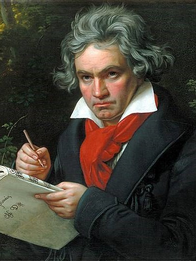

貝多芬
樂聖
貝多芬上承古典樂派傳統，下啟浪漫樂派之風格與精神，因而在音樂史上佔有重要的地位。貝多芬雖然經歷聽力下降，仍一直創作音樂，他一生創作了9部交響曲、36首鋼琴奏鳴曲（其中32首帶有編號，1首未完成，編號為WoO. 51）、10部小提琴奏鳴曲、16首弦樂四重奏、1部歌劇及2部彌撒曲等等。這些作品無論是在曲式、和聲以及織體上都有重大創新，影響了音樂發展史，其中32首鋼琴奏鳴曲，第三、五、六、九交響曲和《莊嚴彌撒》是其代表作，尤其聞名。1827年貝多芬因病逝世。在漢字文化圈，貝多芬有「樂聖」之尊稱。